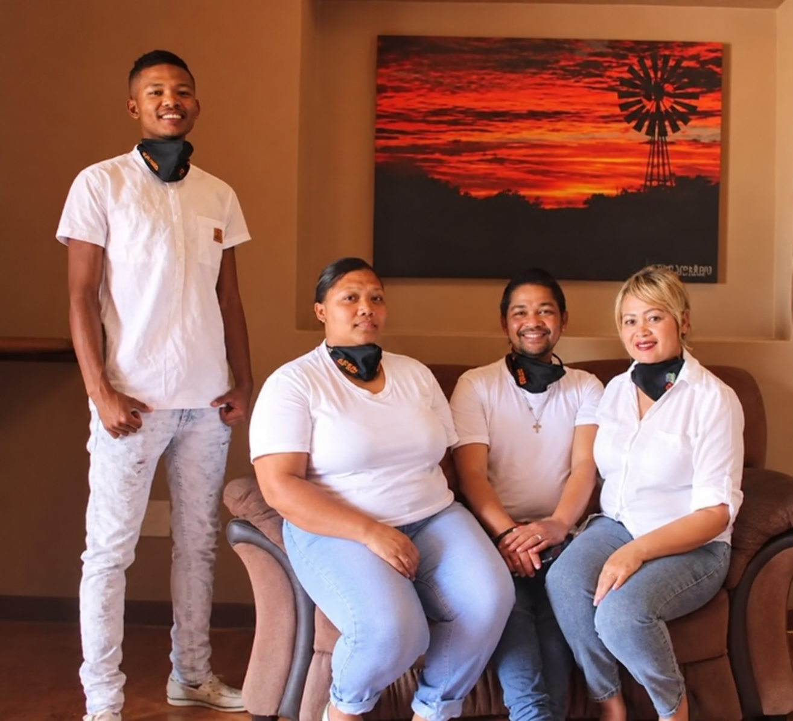

Monitoring & Evaluation
We establish baselines, track performance, assess outcomes and examine the effectiveness and impact of programmes.
↗We are Loeriesfontein Data Collection Specialists. Since 2021, we have worked alongside communities, development partners and project stakeholders to collect credible information, understand lived experiences and make development outcomes more visible.
Who we are
We are a Monitoring, Evaluation, Research and Data Collection company established in September 2021 and based in Loeriesfontein, Northern Cape.
We specialise in project monitoring, impact evaluation, baseline assessments, beneficiary surveys, stakeholder consultations, data processing, reporting and evidence-based development support. We are a 100% black-owned enterprise, led by four active directors who collectively oversee our operational, strategic, fieldwork, quality assurance, data management and reporting functions.
Since our establishment, we have contributed to development interventions across health, education, enterprise development, community infrastructure, agriculture, socioeconomic development, youth development, SMME support, social welfare and livelihood improvement.
We have grown from a local data collection provider into an experienced Monitoring and Evaluation practitioner organisation. We support the full project information cycle—from understanding an assignment and designing the research approach to collecting, processing, analysing and reporting evidence.
Our capabilities
We bring research, fieldwork, data management and reporting into one coordinated service—shaped around each assignment’s objectives and operating context.
We establish baselines, track performance, assess outcomes and examine the effectiveness and impact of programmes.
↗We design surveys, conduct interviews, facilitate consultations and gather quantitative and qualitative evidence.
↗We verify, clean, code, consolidate and manage records to build structured, consistent and client-ready datasets.
↗We translate findings into progress reports, evaluations, impact insights, executive summaries and recommendations.
↗What we do
Explore our service areas. Select a capability to see the activities we can bring together for an assignment.
Our service framework
We help clients understand whether programmes are being implemented as intended, what is changing and what the evidence says about performance and outcomes.
A current area of work
Our recent community statistics baseline assessment, associated with Loeriesfontein Wind Farm and Khobab Wind Farm, has a target scope of 950 households. Through structured household interviews and the careful documentation of information, we are working to build a clearer picture of community circumstances and priorities.
We use the evidence gathered to support community-level insights, feedback and recommendations. Our work is intended to help stakeholders understand local conditions through organised, dependable information.
We do not use identifiable beneficiary or project photographs as public marketing material. Images provided to us for agreed reporting purposes are handled within that purpose and are not treated as permission for public exposure.
Flexible project scale
Our assignments vary in size and complexity. Some engagements involve focused interviews with around 20 beneficiaries; others require the coordination and fieldwork needed for 950 or more participants.
We shape the research design, field resources, tools and quality controls around the agreed scope. The interactive scale below illustrates the range of participant scopes we can plan for—it is not a live project completion counter.
Where we work
Our experience spans programmes that aim to improve access, capability, opportunity, wellbeing and local development.
We support community health interventions, healthcare access evaluations, beneficiary outcome assessments and health programme monitoring.
Health & wellbeingWe contribute to educational development programmes, school-based initiatives, learner support projects and education impact monitoring.
Learning & opportunityWe monitor enterprise development, assess SMME performance, review business support programmes and track economic development.
Enterprise developmentWe assess agricultural support projects, livelihood improvement programmes and beneficiary outcomes.
Livelihood resilienceWe work across community infrastructure assessments, upliftment projects, socioeconomic programmes and place-based initiatives.
Local developmentWe support evidence gathering for vulnerable household programmes, youth development, welfare initiatives and community support interventions.
People & inclusionHow we deliver
We use a systematic, evidence-based framework refined through practical project implementation. Expand each phase to explore how we organise our work.
Discuss an assignmentPortfolio of evidence
Our experience includes monitoring and impact evaluation assignments across a range of development sectors. The examples below reflect areas represented in our organisational records.
We have contributed to monitoring, tracking and evaluation work in projects with different objectives, participant groups and operating contexts.
We coordinate the practical elements needed to produce clear, traceable and useful project information.
Professional development
Our technical and organisational development has been supported by mentorship, practical guidance and formal Monitoring and Evaluation training.
We participated in structured mentoring that helped strengthen our foundational Monitoring and Evaluation capability through regular practical support.
We participated in business mentorship and compliance support initiatives, gaining exposure to administrative, compliance and business development processes while continuing our field delivery.
Our directors successfully completed a Monitoring and Evaluation course through FPD, strengthening our shared technical foundation.
Our leadership
Our four active directors collectively oversee the strategic, operational and technical responsibilities of the organisation. All are actively involved in project delivery and field operations.
We work collectively across project planning, research, implementation, quality assurance, data management and reporting. Our structure allows us to remain close to both the detail of fieldwork and the wider objectives of each assignment.

Our commitment
Dignity before publicityWe work with people from different circumstances, including vulnerable households and individuals who may be facing difficult social or economic conditions. We recognise that every participant deserves to be approached with respect, sensitivity and consideration for their privacy.
Some participants may agree to photographs being taken as part of an agreed reporting process. We understand that this does not automatically mean they have agreed to public exposure, marketing use or publication on a website. We therefore do not use beneficiary or project photographs as promotional content.
We believe professional evidence gathering should never compromise a person's dignity. We aim to protect participant trust, follow the purpose for which information was collected and share project material only through authorised reporting channels.
Our organisational competencies
Our competencies are applied as an integrated set of capabilities, aligned to assignment scope, deliverables and stakeholder requirements.
Project monitoring, programme monitoring, performance monitoring and compliance monitoring.
Track implementationBaseline evaluations, mid-term evaluations, endline evaluations and impact evaluations.
Assess resultsCommunity engagement, beneficiary management, government and NGO liaison, and private-sector engagement.
Work with peopleSurvey design, data collection, research administration, quantitative and qualitative analysis, and data quality management.
Build reliable evidenceTechnical reporting, executive reporting, strategic reporting and evidence-based reporting.
Communicate insightTheory of Change development, KPI tracking, lessons learned and practical recommendations.
Support better decisionsStart a conversation
Whether you need a baseline study, programme monitoring, beneficiary research, an evaluation or a reporting partner, we would welcome the opportunity to understand your objectives.